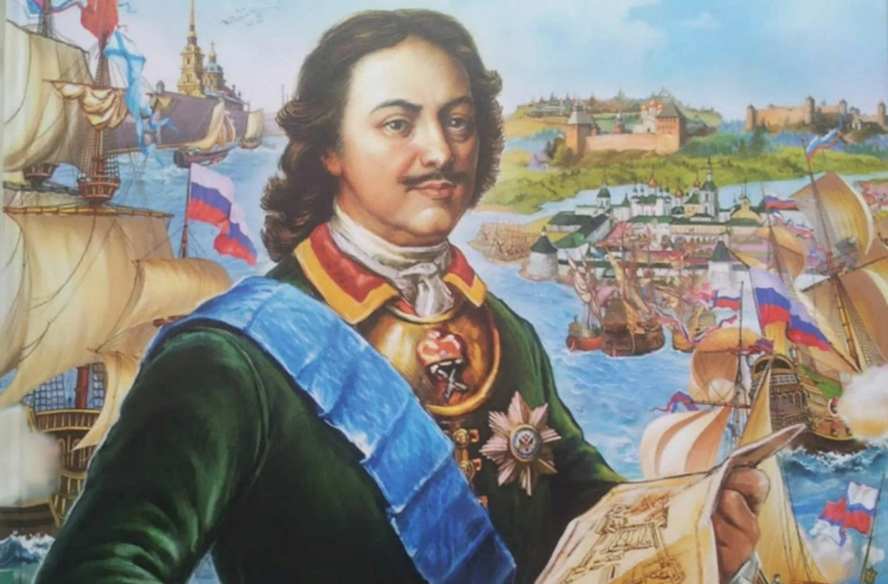
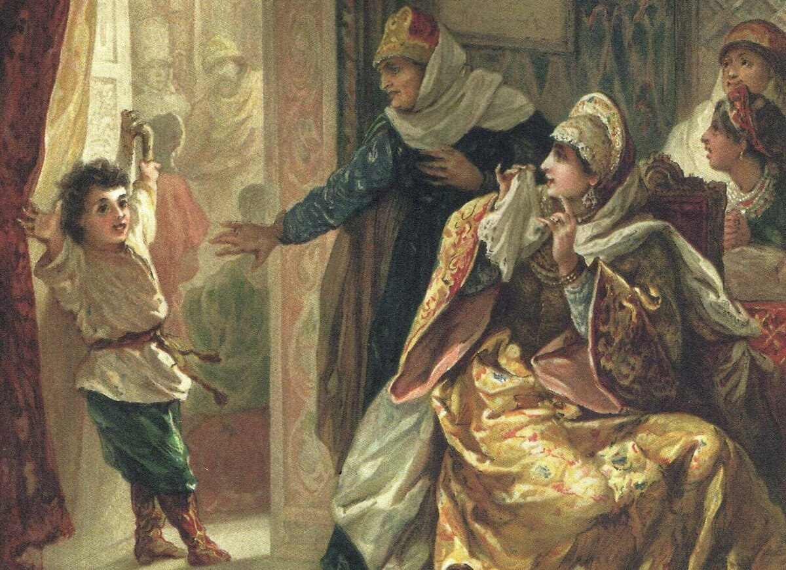
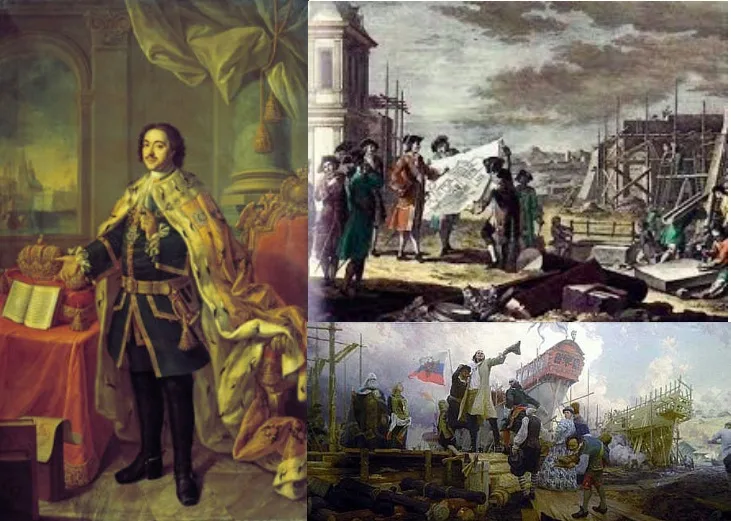
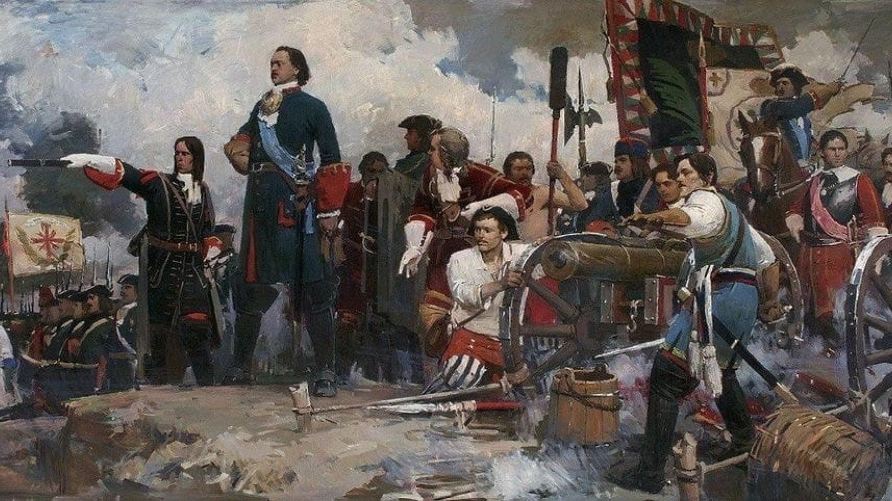
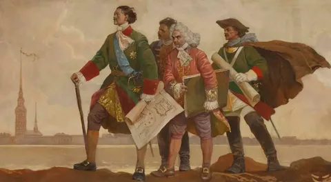
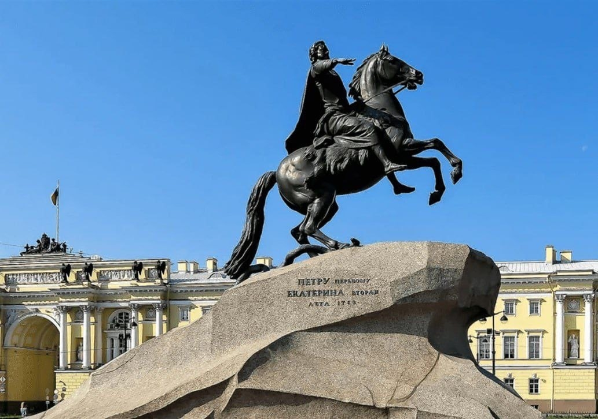

Вступление

Пётр Алексеевич Романов, более известный как Пётр I, родился в 1672 году. Его правление ознаменовалось решительными и широкомасштабными преобразованиями, направленными на укрепление государства, создание регулярной армии и флота, модернизацию управления и внедрение европейских технологий и образцов культуры. Пётр ставил целью не только усиление внешней мощи России, но и кардинальную трансформацию внутренней жизни — от экономики до обычаев и образования.
Детство и молодость

Пётр вырос в сложной политической обстановке: юность совпала со временем интриг внутри царского двора и конфликтов с опекуншей Софьей. С ранних лет он проявлял интерес к военному делу и кораблестроению: многие историки отмечают, что молодым Петром были предприняты первые попытки организовать мастерские и верфи, где обучались первые русские кораблестроители и артиллеристы. Эти интересы позднее вылились в создание регулярного флота и активную внешнеполитическую деятельность.
Начало реформ и внутренние преобразования

Главной задачей Петра было преобразование отсталой феодальной системы в управляемое государство с современными институтами. Были реорганизованы органы власти: учреждены коллегии, создан Сенат как высший административный орган, введена новая система военной организации и рекрутирования. Для консолидации бюрократических кадров была принята Табель о рангах (1722), которая отделяла происхождение от служебного положения и открывала путь к карьере через службу государю.
Пётр активно внедрял новые технологии и специальности: развитие мануфактур, модернизация горного дела и металлургии, пересмотр систем налогообложения. Он также проводил реформы, направленные на европеизацию быта — от моды до образовательных практик — что вызывало как поддержку, так и резкие сопротивления со стороны традиционных слоёв общества.
Внешняя политика и военные кампании

Пётр придавал ключевое значение выходу к морю и контролю над торговыми путями. Это привело к систематическим военным усилиям на Балтике и к началу Великой Северной войны (1700–1721), в результате которой Россия утвердила своё влияние в регионе. Победа при Полтаве (1709) стала одним из поворотных пунктов в конфликте со Швецией.
Создание регулярного флота и реорганизация армии позволили России участвовать в европейской политике на равных. Итогом военных успехов стала трансформация Росcии в европейскую империю и признание её статуса среди держав того времени.
Общественная и культурная деятельность

Пётр активно поощрял образование и науку: при его покровительстве появились новые учебные заведения, привозились специалисты из Европы, отправлялись русские молодые люди на учёбу за границу. Он поощрял развитие искусства и архитектуры, что привело к появлению новых общественных и культурных центров, в том числе к основанию Санкт-Петербурга.
Личная жизнь и образ в памяти

Личная жизнь Петра отличалась напряжённостью — она включала как политические браки и конфликты при дворе, так и трагические события. Образ Петра в истории сложен: его почитают как сильного реформатора и строителя мощного государства, но одновременно критикуют за жестокость методов и репрессии. Наследие Петра — это сочетание радикальных преобразований и устойчивого перехода России в новую историческую эпоху.